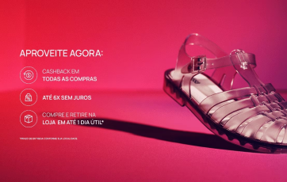
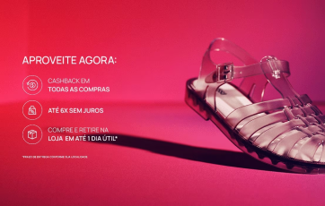

|
 |
 |
| Melissa + O Boticário | Modelos Aranhados | Benefícios |
Conheça alguns dos lançamentos mais inusitados da nossa marca em colaboração com diversos designers, marcas e arquitetos famosos.
Vivienne é uma das parceiras mais antigas e este modelo apresenta uma versão revisitada do sucesso Animal Toe, que reproduz a pata de um felino, agora com a parte de trás aberta e fechamento com fivela.
A arquiteta teve a inspiração para o produto em movimentos fluidos que acompanhassem as linhas do corpo, criando contornos mais orgânicos através das tiras vazadas e ares da aerodinâmica.
É um lançamento de uma coleção cápsula de 4 sapatos da época que o estilista estava na Chanel. Nesse modelo em específico seu lado bem humorado fica presente, no qual o salto do scarpin ganha um formato de sorvete.
Em parceria com uma marca de New York que tem em sua essência a sustentabilidade de uma forma inusitada e lúdica, trazendo um modelo papete estilo puffer, com cores vibrantes, glitter e tons metalizados, além de muitas curvas.
Esse modelo representa bem a estética e o universo punk que a estilista gostava de criar. Com esse salto plataforma cortado e tiras largas na frente e calcanhar, o sapato ainda possui um aplique de asas que pode ser removido.
Com formas extraordinárias e sempre tentando trazer referências mais históricas, esse novo modelo collab da marca foi inspirado nas miniaturas de vasos rococó, apresentando conforto e elegância.
Outra parceria do estilista com a marca, desta vez um é um modelo mais moderno, que lembra os famosos cut out shoes, e faz referência ao seu look clássico, a camisa com gravata e terno.
|
|
 |
| Melissa + O Boticário | Modelos Aranhados | Benefícios |